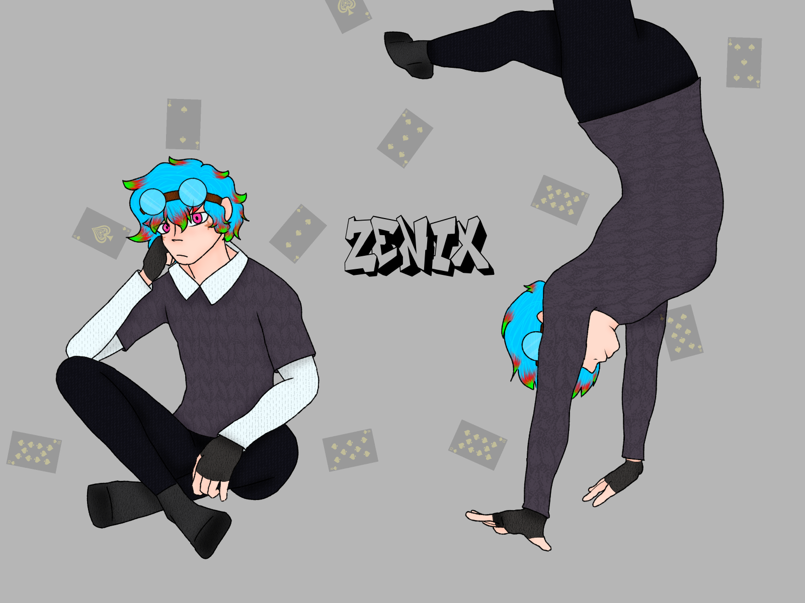

Zenix

Basics
Name
Daichi Inamura
Username
Zenix
Guild
Mod Guild
Gender / Pronouns
Male - He/Him
Age
26
Orientation / Sexuality
Homosexual
Availability
Taken by Pokey
Personality
Zenix comes off as an individual whose very light hearted, full of joy and fun. He makes jokes, and likes a good laugh. He is very smart, and very agile and flexible. He likes to be someone others can depend on.
Character Stats
Race / Class
Mage / Moderator
Level
96
Extra Extremities
N/A
Abilities
- God's Hand, He is able to store inanimate objects in his 52ct deck of playing cards. He can pull the objects out at Will. The object is displayed on each card. The cards can be broken or torn, and if a card is torn, the item will immediately be lost forever, so he must be extremely careful with what he stores.
- Moderator Abilities,As a moderator, he is able to manipulate how certain items, objects, and characters interact with eachother. Examples include: Making items bounce when they touch, magnetizing two things, etc.
Weaknesses
He is relatively scrawny. Brute Force (If one can even touch him) can be deadly for his avatar.
Special Skills
He's great at playing card games, and he's incredibly flexible.